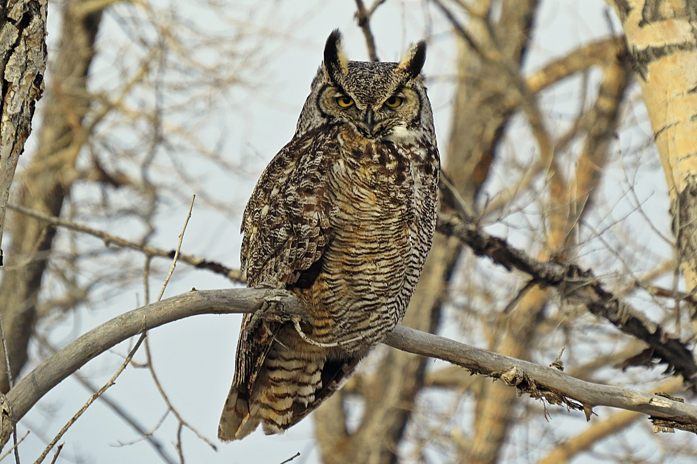
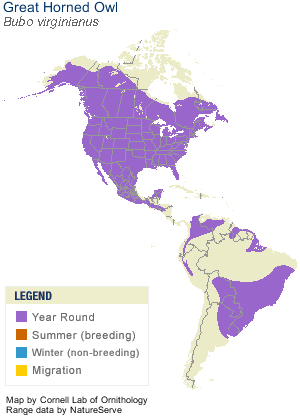

Neat facts
- Great Horned Owls are fierce predators and can take down falcons and other owls. They eat all sorts of creatures.
- Their talons clench with a force of 28 pounds, severing the spines of large prey.
- Crows may mob together and attempt to take down a Great Horned Owl since it is their most feared predator.
- They have very soft feathers which keep them warm in the winter and allow them to fly quietly.
- Great Horned Owls have large eyes, with many rods for night vision, that don't move in their sockets. Instead, their heads can swivel over 180 degrees.
- Facial disc feathers direct sound waves to their ears, giving them sensitive hearing.
| Binomial Name | Bubo virginianus |
|---|---|
| Length | 46-63 cm |
| Wingspan | 101-145 cm |
| Weight | 910-2500 g |
| Habitat | Secondary-growth woodlands, swamps, orchards, agricultural areas, forests, and deserts |
| Food | Tiny rodents, scorpions, hares, bats, gophers, chipmunks, squirrels, house cats, porcupines, reptiles, insects, fish, skunks, geese, and other birds |
| Nest Location | Tree holes, stumps, caves, or abandoned nests of other birds anywhere from 4.5 m to 22 m off the ground |
| Nest Size | Varies |
| Egg Description | Dull white and nearly spherical, with a rough surface |
| Clutch Size | 1-4 eggs |

In the dark of night, if you patiently search the twisted maze of branches, you might just spot one of these majestic predators.